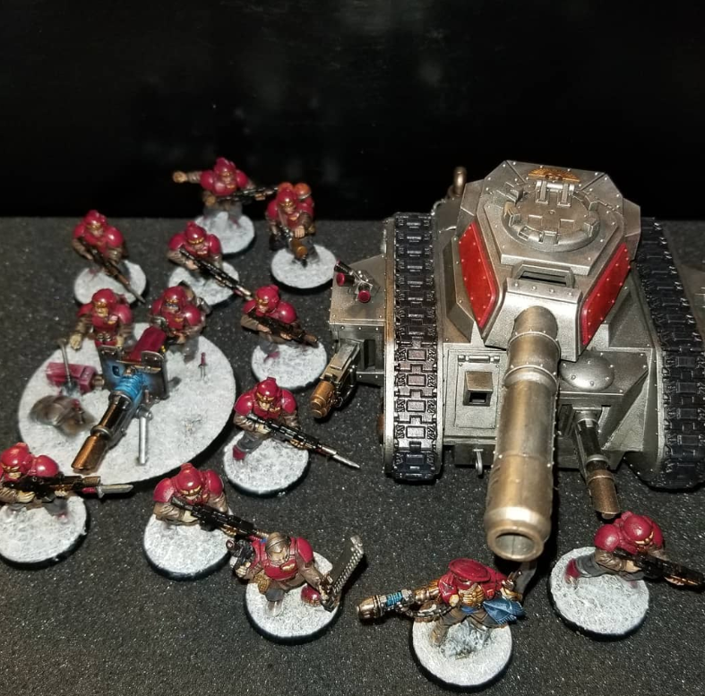

Building
When deciding which army is best for you, a good rule of thumb is to go with the army you think looks cool. This way you can begin to play with an army that you enjoy. You may decide that army is not what you are looking for, and that is fine! You learned how to play, that is the most important part.
Each army has kits that may be purchased. These can be expensive, so keep your eye out for deals and “hand-me-downs” on Facebook Marketplace or KSL. Second-hand is usually the cheapest way to begin collecting your chosen army, however the models are usually already put together with weapons the seller decided on. My suggestion here would be to try to find a small army being sold by a private party, then supplement it with new boxes from your local game store.
Painting
Next to think about is your color scheme. This can be tricky. Pinterest is a good resource for ideas. I like to think about the army. For Tyranids, the “bugs”, I would look at nature. What have our insects done to show they are dangerous, or to scare away predators? There is inspiration everywhere if you know where to look. A good set of paints are from Citadel, they are the Games Workshop specific paint line, which does mean they can be pricey. Vallejo is another good paint line, not as pricey, but not as many colors to choose from. Unfortunately any basic craft store paint can be too thick and require some modifications in order to use.